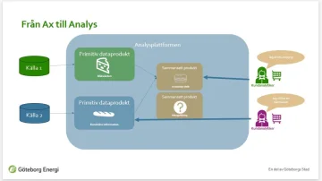
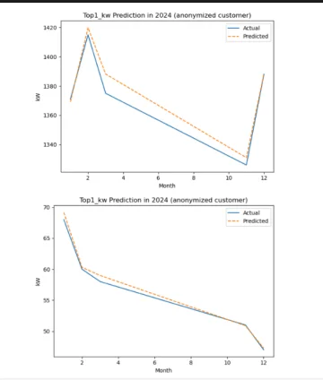

Clarify
Define the real question and align expectations.
I help organizations turn fragmented data, unclear requirements and manual reporting into reliable analytics products, governed BI and practical AI-ready workflows.
Vision. Strategy. Implementation. Insight. Impact.
Trusted by
Selected work
Built modern analytics solutions that connect business needs, source systems, semantic models and decision-ready Power BI reporting.
View case studyMy approach
Align data, systems and business strategy to create clarity and measurable direction.
Learn moreDesign secure, scalable and future-proof data platforms that grow with your business.
Learn moreAutomate workflows and unlock AI-driven insights to accelerate decisions and impact.
Learn moreProjects that show how I turn fragmented data, unclear requirements and manual reporting into trusted analytics products, governed BI and practical automation-ready workflows.
Explore selected work
01 / Analytics Platform Modern data foundations
02 / BI Products Insights teams can reuseReferences
“I understood that you’ll be leaving GE, which is so sad to hear!! You truly contribute so much to the company!! But of course, it’s always right to follow your heart and to work with and develop what you’re most passionate about 👍🥰 Absolutely the right choice, Patricia!! You should follow what inspires and challenges you!! I also know how hard you’ve been working and fighting for this. It has been such a pleasure and truly inspiring to work with you!!”
“You were fantastic from the very beginning when you came to Boplats. Attitude, mindset, and commitment. I have had the chance to see you grow and experienced you as a wonderful and smart person with a great deal of warmth and wisdom. An unbeatable mix! 😉”
“I heard that you were going to leave. I think that’s a shame, since I quickly noticed that you really have a good grasp of the situation!”